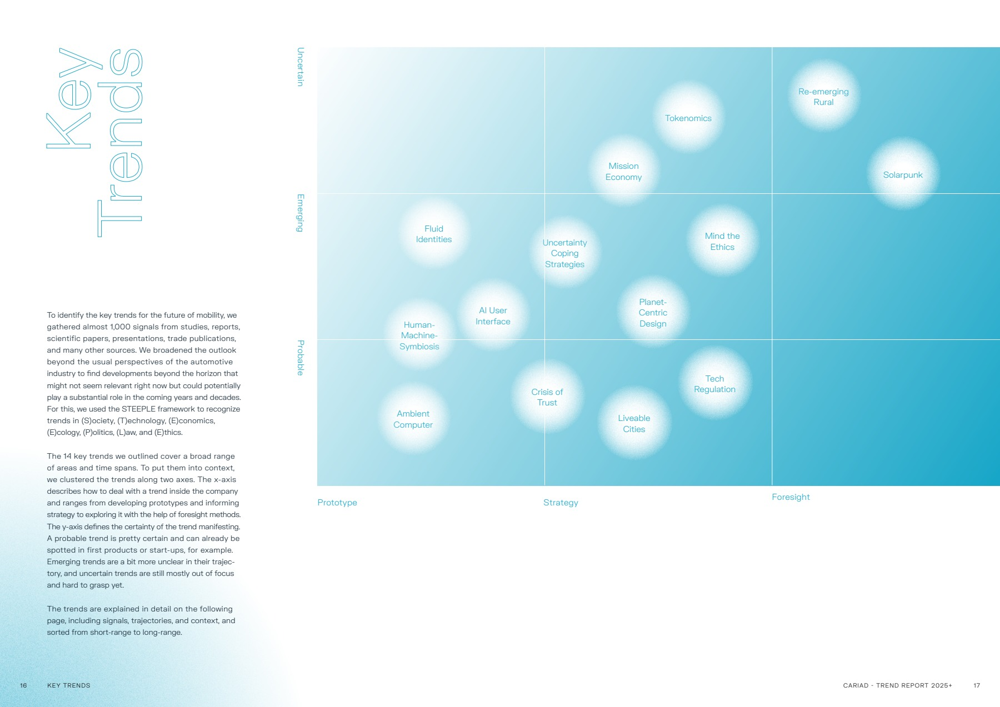
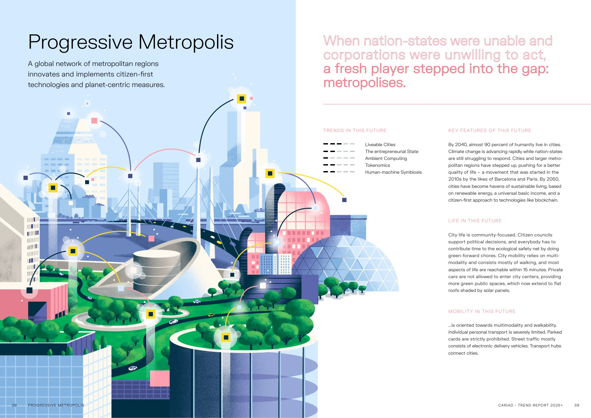

Strategic foresight · Automotive UX
CARIAD · Futures Report 2025+
An automotive futures study that translated emerging trends into scenarios, experience principles and interface concepts.

At Edenspiekermann, I worked on a futures programme that explored how automotive experiences might evolve from 2025 onward. The June 2022 report set out six scenarios for mobility beyond the car, including Progressive Metropolis, Advantage China and Synthetic Friends. I researched trends and emerging signals, helped draft and consolidate scenarios, and worked backward from those scenarios to identify what would need to change in the experience.
I translated that work into UX principles and journeys, helped design the presentation, and prototyped future interfaces. The prototypes made the implications of the scenarios concrete enough to discuss at the level of an interaction.



